High Quality Untargeted Metabolomics Analysis Report
Project Information
Project Number: X101SC250XXXXX-Z01
Project Name: demo
Report Date: 2025-08-08
Report Number: X101SC250XXXXX-Z01-J001
Project Summary
This project applied untargeted metabolomics technology to conduct research. The instrument platforms used were Q Exactive. A total of 1698 positive ion-mode metabolites and 1266 negative ion-mode metabolites were identified from the 28 samples in this project. Differential metabolites were screened according to the criteria of VIP > 1.0, FC > 1.2 or FC < 0.833 and P-value < 0.05. For example, there were 101 positive ion-mode metabolites with significant differences in the Group1.vs.Group2 comparison group, of which 59 metabolites were up-regulated and 42 metabolites were down-regulated. There were 44 negative ion-mode metabolites with significant differences, of which 21 metabolites were up-regulated and 23 metabolites were down-regulated. Based on the above data, systematic pathway annotation was performed for all identified metabolites, and differential analysis and KEGG analyses were performed for all differential metabolites. The specific workflow and analysis are as follows.
Research Overview
Metabolome refers to the collection of all small molecular metabolites (mainly endogenous small molecules with a relative molecular weight less than 1000 Da) in cells, tissues, organs or organisms.
Metabolomics is a new technology emerging after genomics, transcriptomics and proteomics. It is an important part of systems biology. Metabolomics aims to investigate the changes of metabolic products or the changes with time after the cells and tissues of organisms are stimulated or disturbed. Through screening the differential metabolites of the experimental group and the control group, the biological processes involved by the differential metabolites are studied, and the mechanism of their participation in life activities is revealed.
Metabolomics is more similar to phenotypes. It is an extension of transcriptomics and proteomics, and can reflect the physiological state of organisms more directly and accurately. Bill Lasley and UC Davis once pointed out that "genomics and proteomics tell you what may happen, while metabolomics tell you what has actually happened".
Untargeted metabolomics aims at discovery. It is necessary to detect as many metabolites as possible in biological samples and reflect the total metabolite information to the greatest extent. Therefore, untargeted metabolomics must equip with high-resolution mass spectrometer. The higher the resolution, the more metabolites detected by the mass spectrometer. The combination of ultra-high performance liquid chromatography (UHPLC) and high resolution mass spectrometer (HRMS), namely, LC-MS/MS, has been widely applied in untargeted metabolomics research due to its advantages of wide range of detected substances and simple sample pretreatment.
Project Workflow
1. Experiment workflow
This project is based on the liquid chromatography-mass spectrometry (LC-MS) technology [1-2] to conduct untargeted metabolomics research. The experiment workflow mainly includes: sample metabolite extraction, LC-MS/MS detection and data analysis, etc. Due to the characteristics of metabolomics, such as rapid changes in metabolites, a wide variety of metabolites, large differences in concentrations, diverse chemical properties, and huge data information, every step from sample collection, storage, metabolite extraction, and mass spectrometry detection may have an impact on the quality of data. The quality of data will directly affect the results of subsequent information analysis. In order to ensure the accuracy and reliability of the data from the source, Novegene meticulously controls every step of the experiment and realizes the standardized operation of metabolomics, fundamentally ensuring the production of high-quality data. The experimental flow chart is as follows:
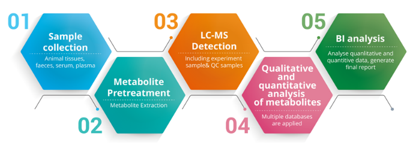
Note: QC samples were made by mixing the same volume of experiment samples, and were tested on the machine before, during and after the LC-MS/MS injection of experiment samples.
The first three QC samples before injection were used to monitor instrument status and equilibrate the LC-MS system. QC samples inserted throughout the sample analysis were used to evaluate system stability and perform data quality control throughout the entire experiment.
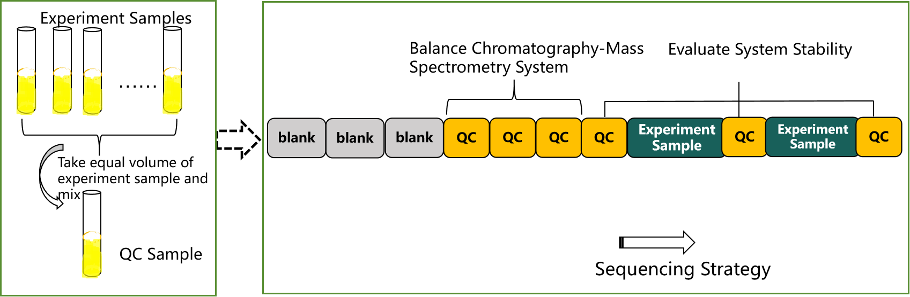
2. Bioinformatics analysis workflow
First, the raw mass spectrometry data was converted to mzXML format using ProteoWizard [3] . Then, peak extraction, alignment, and retention time correction were performed with XCMS software [4]. Subsequently, the total peak area within each sample was normalized, and peaks with a missing rate greater than 50% across sample groups were filtered out. The corrected and filtered results were matched with the Novogene local database to obtain metabolite identification information. Following this, multivariate statistical analysis was conducted on the metabolites, including Principal Component Analysis (PCA) and Partial Least Squares Discriminant Analysis (PLS-DA), to reveal metabolic pattern differences between groups. Hierarchical Clustering Analysis (HCA) and metabolite correlation analysis were performed to uncover relationships between samples and among metabolites. Functional analyses, such as metabolic pathway analysis, were conducted to interpret the biological significance associated with metabolites. The workflow for untargeted metabolomics bioinformatics analysis is as follows:
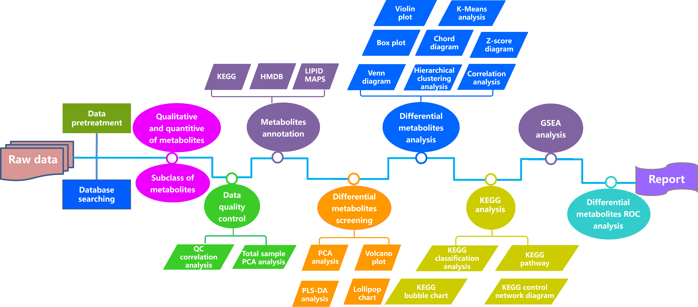
Note: This analysis flow chart includes all analysis contents of the product, and the specific analysis content of this project is based on this report.
Bioinformatics Analysis Results
1. Sample information
Table 1.1 Sample information
| Raw name | Samples name | Group names | ID num |
|---|---|---|---|
| FZTM250051201-1A | sample1 | Group1 | 4 |
| FZTM250051202-1A | sample2 | Group1 | 15 |
| FZTM250051203-1A | sample3 | Group1 | 25 |
| FZTM250051204-1A | sample4 | Group1 | 26 |
| FZTM250051205-1A | sample5 | Group1 | 27 |
| FZTM250051206-1A | sample6 | Group1 | 28 |
| FZTM250051207-1A | sample7 | Group1 | 29 |
| FZTM250051208-1A | sample8 | Group2 | 30 |
| FZTM250051209-1A | sample9 | Group2 | 31 |
| FZTM250051210-1A | sample10 | Group2 | 5 |
| FZTM250051211-1A | sample11 | Group2 | 6 |
| FZTM250051212-1A | sample12 | Group2 | 7 |
| FZTM250051213-1A | sample13 | Group2 | 8 |
| FZTM250051214-1A | sample14 | Group2 | 9 |
| FZTM250051215-1A | sample15 | Group3 | 10 |
| FZTM250051216-1A | sample16 | Group3 | 11 |
| FZTM250051217-1A | sample17 | Group3 | 12 |
| FZTM250051218-1A | sample18 | Group3 | 13 |
| FZTM250051219-1A | sample19 | Group3 | 14 |
| FZTM250051220-1A | sample20 | Group3 | 16 |
| FZTM250051221-1A | sample21 | Group3 | 17 |
| FZTM250051222-1A | sample22 | Group4 | 18 |
| FZTM250051223-1A | sample23 | Group4 | 19 |
| FZTM250051224-1A | sample24 | Group4 | 20 |
| FZTM250051225-1A | sample25 | Group4 | 21 |
| FZTM250051226-1A | sample26 | Group4 | 22 |
| FZTM250051227-1A | sample27 | Group4 | 23 |
| FZTM250051228-1A | sample28 | Group4 | 24 |
| QC1 | QC1 | QC | 1 |
| QC2 | QC2 | QC | 2 |
| QC3 | QC3 | QC | 3 |
Note: The report only shows some results, for detailed results please see: Result/1.MetQuant-QC/sam_qc_infor_{pos,neg}.xls. (1) Raw name: Novogene extraction number. (2) ID num: sample name sequence (number corresponding to total sample PCA and PLS-DA).
2. Qualitative and quantitative analysis of metabolites
2.1 Data pretreatment and metabolite identification
Based on high-resolution mass spectrometry (HRMS) detection technology, combined with high-quality secondary spectrum databases for matching and identification of molecular characteristic peaks, achieves high-throughput and high-quality metabolite identification in biological samples, reflecting the information of total metabolites to the maximum extent.
The raw data from the mass spectrometer is pre-processed using XCMS software. First, peak extraction, peak quantification, and peak alignment were performed. Then, based on the specified ppm and adduct information, the data is compared with a high-quality MS/MS spectral database for metabolite identification. Finally, metabolites with a coefficient of variance (CV) below 30% [5] in QC samples were retained as the final identification results for subsequent analysis.
2.2 Quantitative results
The XCMS data processing software was used to integrate chromatographic peaks detected in the samples. The peak area of each characteristic peak represents the relative quantification of a metabolite. The quantitative results were normalized using the total peak area, resulting in the final quantitative values for the metabolites. The results are shown in Table 2.1
Table 2.1 Quantitative results of metabolites
| Compound_ID | Name | IonMode | Formula | MolecularWeight | m/z | MassError | Adduct | RT (min) | Score | Level | Column | ClassI | ClassII | ClassIII | CAS | HMDB_ID | KEGG_ID | KEGG_MapID | Lipidmaps_ID | PubChemID | SMILES | InChIKey | pos_QC1 | pos_QC2 | pos_QC3 | pos_sample1 | pos_sample10 | pos_sample11 | pos_sample12 | pos_sample13 |
|---|---|---|---|---|---|---|---|---|---|---|---|---|---|---|---|---|---|---|---|---|---|---|---|---|---|---|---|---|---|---|
| Com_1685_pos | Huperzine B | P | C16H20N2O | 256.15756 | 279.14845 | 6.06465 | [M+Na]+ | 6.843 | 0.81 | 1 | C18 | Organoheterocyclic compounds | Phenanthrolines | - | """103548-82-9""" | HMDB0253233 | C09866 | - | - | 3631 | CC1=CC2CC3=C(C=CC(=O)N3)C3(C1)NCCCC23 | YYWGABLTRMRUIT-UHFFFAOYSA-N | 2685469.86977343 | 2955741.1127931685 | 2622603.923847087 | 3995899.823265852 | 3014917.771472027 | 6255617.287812361 | 2466883.361630759 | 4777687.255296703 | Com_1423_pos | Bombykol | P | C16H30O | 238.22966 | 256.26354 | 0.29549 | [M+NH4]+ | 10.698 | 0.78 | 1 | C18 | Lipids and lipid-like molecules | Fatty Acyls | Fatty alcohols | """765-17-3""" | - | C16873 | - | LMFA05000007 | - | CCCC=CC=CCCCCCCCCCO | CIVIWCVVOFNUST-SCFJQAPRSA-N | 57254553.2291944 | 61649748.54698873 | 62820820.58780939 | 53288000.06724451 | 56905443.49167159 | 49554014.88701046 | 76365342.06157616 | 70921266.06988144 | Com_1567_pos | Sphingosine (d17:1) | P | C17H35NO2 | 285.26678 | 268.26374 | 0.95666 | [M+H-H2O]+ | 6.895 | 0.61 | 1 | C18 | Organic nitrogen compounds | Organonitrogen compounds | Amines | """6918-48-5""" | - | - | - | LMSP01040002 | - | CCCCCCCCCCCCC=CC(C(CO)N)O | RBEJCQPPFCKTRZ-LHMZYYNSSA-N | 3992455.15197744 | 3938746.763903557 | 4046691.1247651433 | 773747.8330528087 | 22971255.893320907 | 3711647.202599842 | 1057314.001104124 | 7081536.508216988 | Com_1725_pos | Maculosin | P | C14H16N2O3 | 260.11609 | 283.10811 | 9.96547 | [M+Na]+ | 5.907 | 0.56 | 1 | C18 | Organic acids and derivatives | Carboxylic acids and derivatives | Amino acids, peptides, and analogues | """4549-02-4""" | - | C10605 | - | - | - | C1CC2C(=O)NC(C(=O)N2C1)CC3=CC=C(C=C3)O | LSGOTAXPWMCUCK-RYUDHWBXSA-N | 643139.423411874 | 638727.6298215026 | 1039936.055554834 | 820877.002335762 | 1232484.894420557 | 868290.2088147217 | 465446.8361417002 | 857525.7285000453 | Com_1686_pos | Lotaustralin | P | C11H19NO6 | 261.12124 | 279.15247 | 9.20113 | [M+NH4]+ | 5.616 | 0.77 | 1 | C18 | Organic oxygen compounds | Organooxygen compounds | Carbohydrates and carbohydrate conjugates | """1973415-50-7""" | HMDB0033865 | C08334 | map00460;map01110 | - | 4626626 | CCC(C)(OC1OC(CO)C(O)C(O)C1O)C#N | WEWBWVMTOYUPHH-UHFFFAOYSA-N | 677482.446351564 | 677032.4285341314 | 461383.3128044828 | 525060.8734796045 | 237784.61935861324 | 654855.2866836307 | 514314.2118541979 | 756087.2592667831 | Com_1586_pos | ascaroside C6 | P | C12H22O5 | 246.14673 | 269.13838 | 9.10963 | [M+Na]+ | 6.642 | 0.51 | 1 | C18 | Organic oxygen compounds | Organooxygen compounds | Carbohydrates and carbohydrate conjugates | """946524-24-9""" | - | - | - | LMFA13040003 | - | CC1C(CC(C(O1)OC(C)CCC(=O)C)O)O | KDIFLHQRDPSWHT-IYKVGLELSA-N | 18027988.9901719 | 17332692.09670085 | 17767907.379775055 | 6937494.864299317 | 14995980.27928176 | 4717277.233072015 | 5129968.785588484 | 8629290.367582329 |
Note: This report only shows partial results; detailed results can be found in Result/1.MetQuant-QC/meta_intensity_{pos,neg}.xls. (1) Compound_ID: Metabolite ID (This ID is a randomly assigned number for convenient reference and further analysis; it has no intrinsic meaning). (2) Name: English descriptions of the metabolite. (3) IonMode: Acquisition mode, where "P" indicates positive mode and "N" indicates negative mode. (4) Formula: Molecular formula of the metabolite. (5) Molecular Weight: Molecular weight. (6) m/z: Mass-to-charge ratio. (7) MassError: Deviation between the observed and theoretical values of the precursor ion for the same compound. (8) Adduct: Adduct ion form. (9) RT [min]: Retention time. (10) Score: Qualitative score. (11) Level: Level 1: The metabolite in the sample matches the database in MS1, MS2, and RT. Level 2: The metabolite matches the database in MS1 and MS2. Level 3: The metabolite matches the database in MS1. (12) Column: Type of chromatography column. (13) ClassI, ClassII, ClassIII: English descriptions for the three-level classification of metabolites. (14) CAS: CAS number of the compound. (15) HMDB_ID, KEGG_ID, Lipidmaps_ID, PubChemID, and KEGG_MapID: Database identifiers in HMDB, KEGG, Lipidmaps, PubChem, and the pathway identifier in KEGG. (16) SMILES, InChIKey: Retrieved from the PubChem database; SMILES represents the compound’s structure in a single line of text, while InChIKey is a 25-character molecular identifier. (17) Other columns: Relative quantification information for each sample.
2.3 Metabolite classification results
The chemical classification of metabolites identified in this project was statistically analyzed, and a pie chart was drawn to reflect the classification of metabolites detected and the number contained in each classification. See Figure 2.3 for the pie chart of metabolites Class I classification (see the result file for the high-definition version of the picture):
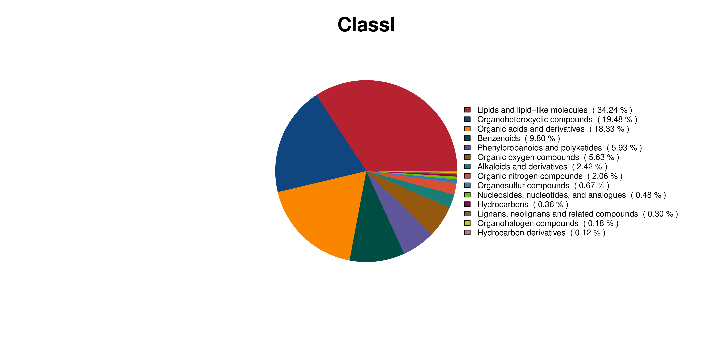
Figure 2.3 Metabolite classification pie chart
Corresponding result catalog: Result/1.MetQuant-QC/Pie_Chart_{pos,neg}.{png,pdf}.
3. Data quality control
The metabolomics is easy to be disturbed by external factors and changes rapidly. Therefore, data quality control (QC) is a necessary step to obtain stable and accurate metabolomics results. Especially when the sample size is large, it takes a certain time for the sample to be tested on the instrument. It is particularly important to check whether the stability of the instrument and the signal response strength are normal in the process of metabolite detection. The quality control system can timely detect abnormalities and solve problems as soon as possible to ensure the quality of the final collected data.
3.1 Correlation analysis of QC samples
Pearson correlation coefficient between QC samples is calculated based on the relative quantitative value of metabolites [6]. The higher the correlation of QC samples (|r| is closer to 1), the better the stability of the whole detection process and the higher the data quality. The correlation analysis results of QC samples are shown in Figure 3.1 (see the result file for the high-definition version of the picture):
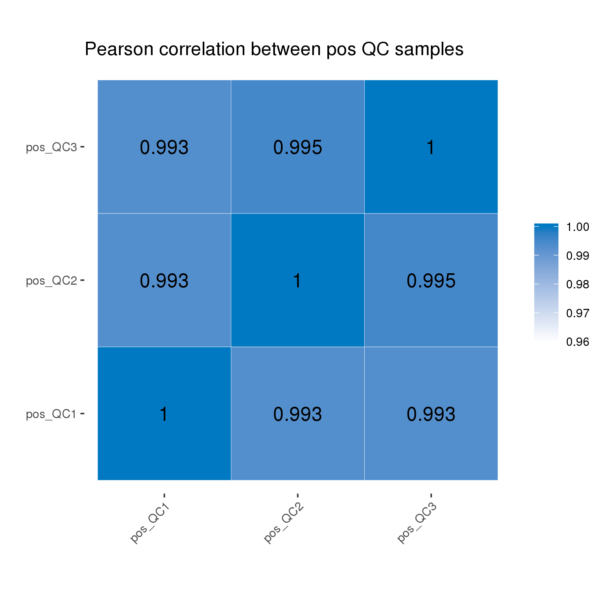
Figure 3.1 Correlation analysis of QC samples
Corresponding result catalog: Result/1.MetQuant-QC/Correlation/cor_pearson_{pos,neg}.{png,pdf,xls}.
3.2 PCA analysis of total samples
Principal component analysis (PCA) is a statistical method that converts a group of variables that may have correlation into a group of linear uncorrelated variables through orthogonal transformation. The converted group of variables is called principal component. Metabolomic data can be considered as a multivariate data set. PCA can reduce the dimension of metabolite variables by linear combination according to a certain weight, and then generate new characteristic variables, which are classified by the similarity of the main new variables (principal components), reflecting the overall metabolic difference between each group of samples and the degree of variation between samples within the group. MetaX [7] software is used for logarithmic conversion and standardization of data.
The peaks extracted from all experimental samples and QC samples were analyzed by PCA analysis. The smaller the difference of QC samples, the better the stability of the whole method, the higher the data quality, which is reflected in the PCA analysis chart, that is, the distribution of QC samples will gather together. The results are shown in Figure 3.2 (see the result file for the high-definition version of the picture):
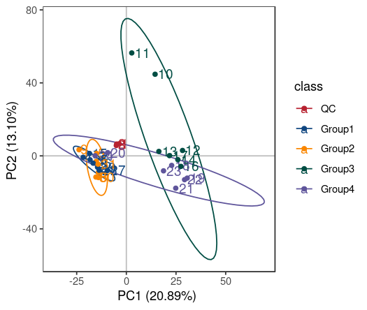
Figure 3.2 PCA analysis of total samples
Note: The abscissa PC1 and ordinate PC2 represent the scores of the first and second principal components respectively, and the scatter color represents the experimental grouping of samples, with a confidence ellipse of 95% (Biological number of replicates less than 4 fails to demonstrate a 95% confidence ellipse).
Corresponding result catalog: The total PCA diagram of QC and all samples is shown in Result/1.MetQuant-QC/Samples_QC_{pos,neg}-PCA[.3D].{png,pdf}; The total PCA of all metabolomics samples is shown in Result/1.MetQuant-QC/Samples_{pos,neg}-PCA[.3D].{png,pdf}.
4. Metabolite pathway and classification annotation
The identified metabolites are annotated by pathway and classification. The main databases include KEGG, HMDB, LIPIDAPS, etc. These databases are used to annotate the identified metabolites to understand the functional characteristics and classification of different metabolites.
- 4.1 KEGG Pathway Annotation
- 4.2 HMDB classification annotation
- 4.3 LIPID MAPS classification annotation
In organisms, different metabolites coordinate with each other to exercise their biological functions. Pathway-based analysis helps to further understand their biological functions. The full name of KEGG is Kyoto Encyclopedia of Genes and Genomes, which contains multiple databases, including KEGG PATHWAY database (https://www.genome.jp/kegg/pathway.html). It is a collection of metabolic pathways, which are mainly divided into seven categories: metabolism, genetic information processing, environmental information processing, cellular processes, biological systems, human diseases and drug development. Each category is subdivided into two levels and three levels. Pathway analysis can determine the most important biochemical metabolic pathway and signal transduction pathway involved by metabolites. The KEGG channel annotation results are shown in Figure 4.1:
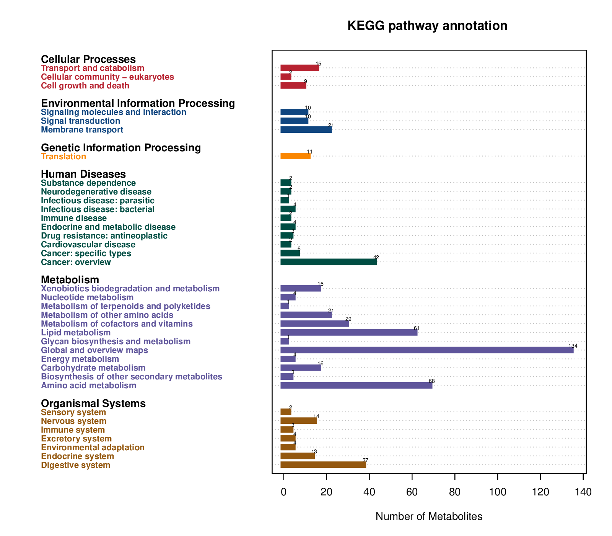
Figure 4.1 KEGG pathway annotation
Note: The abscissa represents the number of metabolites, and the ordinate represents the KEGG pathway annotated; The figure shows the number of metabolites corresponding to each secondary classification under Pathway primary classification.
Corresponding result catalog: The path annotation results based on KEGG database are shown in Result/2.MetAnnotation/KEGG/meta_{pos,neg}_kegg_anno_category.xls; The statistical chart of KEGG pathway annotation results is shown in Result/2.MetAnnotation/KEGG/meta_{pos,neg}.KEGG.Anno.{png,pdf}; For the list of metabolite KEGG annotation results see Result/2.MetAnnotation/KEGG/meta_{pos,neg}.KEGG.Anno.xls.
The full name of HMDB is Human Metabolome Database (https://hmdb.ca/metabolites). A database containing detailed information about small molecular metabolites found in human body and their biological functions, physiological concentrations, disease associations, chemical reactions, metabolic pathways, etc. Through HMDB database annotation, we can quickly obtain the classification information of metabolites. The annotation results of HMDB are shown in Figure 4.2:
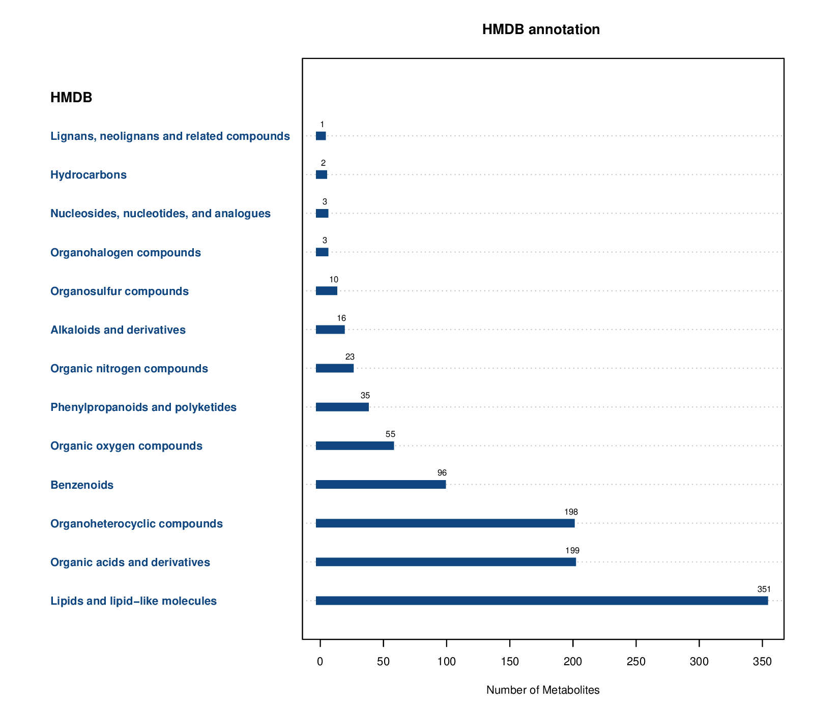
Figure 4.2 HMDB classification annotation
Note: The abscissa represents the number of metabolites, and the ordinate represents the HMDB classification noted; The figure shows the number of metabolites corresponding to superClass in HMDB.
Corresponding result catalog: The classification annotation results based on HMDB database are shown in Result/2.MetAnnotation/HMDB/meta_{pos,neg}_hmdb_anno_category.xls; HMDB classification annotation result statistics chart is shown in Result/2.MetAnnotation/HMDB/meta_{pos,neg}.HMDB.Anno.{png,pdf}; The results of metabolite HMDB annotation are listed in Result/2.MetAnnotation/HMDB/meta_{pos,neg}.HMDB.Anno.xls.
LIPID MAPS (http://www.lipidmaps.org/) is a database containing bio-related lipid structures and annotations, and is currently the largest public lipid database in the world. LIPID MAPS database annotates eight categories of lipids and their subclasses, which are: 1) Fatty acids (FA); 2) Glycerolipids (GL); 3) Glycerophospholipids (GP); 4) Sphingolipids (SP); 5) Sterol Lipids (ST); 6) Preenol Lipids (PR); 7) Saccharolipids (SL); 8) Polypolyethylene (PK). Each category has its own sub-category. The annotation results of LIPID MAPS database are shown in Figure 4.3:
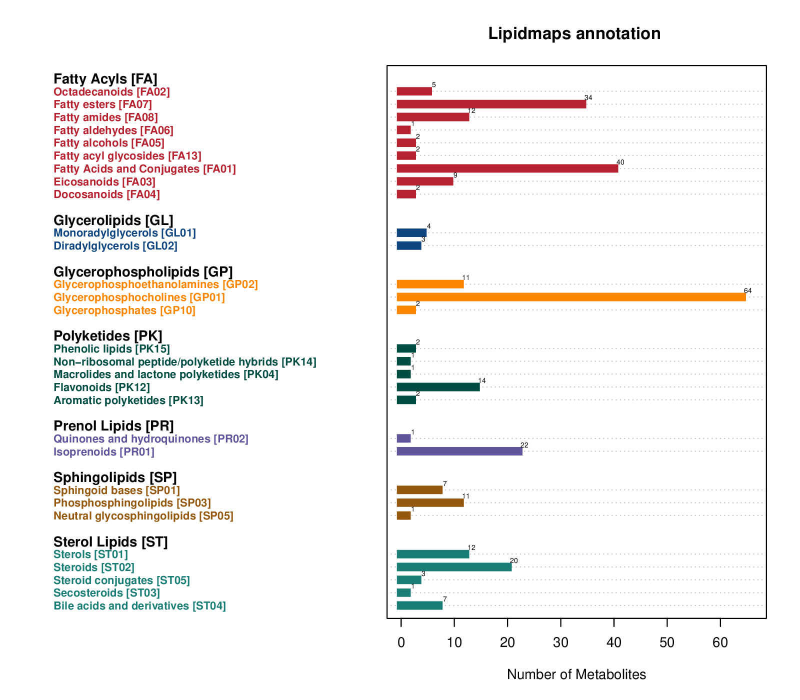
Figure 4.3 LIPID MAPS classification annotation
Note: The abscissa represents the number of metabolites, and the ordinate represents the annotated LIPID MAPS lipid classification; This figure shows the number of (lipid) metabolites corresponding to Main_Class under the eight major lipid categories in LIPID MAPS.
Corresponding result catalog: The classification annotation results based on Lipidmaps database are shown in Result/2.MetAnnotation/Lipidmaps/meta_{pos,neg}_lipidmaps_anno_category.xls; The statistical chart of Lipidmaps classification annotation results is shown in Result/2.MetAnnotation/Lipidmaps/meta_{pos,neg}.Lipidmaps.Anno.{png,pdf}; The list of metabolomics Lipidmaps annotation results is shown in Result/2.MetAnnotation/Lipidmaps/meta_{pos,neg}.Lipidmaps.Anno.xls.
5. Differential metabolite screening
Because metabolomics data has the characteristics of high dimensions and high correlation between variables, traditional univariate analysis cannot quickly and accurately mine the potential information in the data. Therefore, multivariate statistical methods such as PCA and PLS-DA should be used in the analysis of metabolomics data. On the basis of preserving the original information to the greatest extent, the collected multidimensional data should be analyzed by dimensionality reduction and regression, and then the differential metabolites should be screened and subsequently analyzed.
5.1 Principal component analysis (PCA)
PCA was used to observe the overall distribution trend between the two groups of samples. The results are shown in Figure 5.1 (see the result file for the high-definition version of the picture):
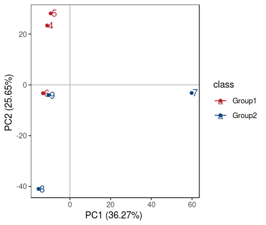
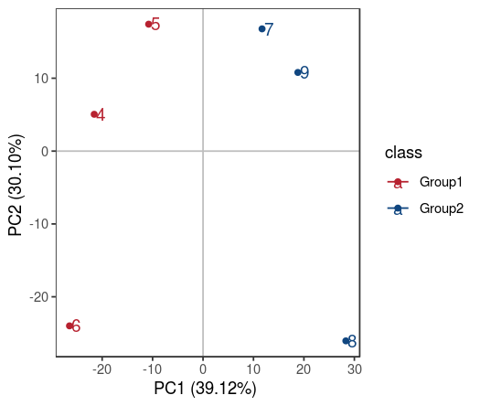
Figure 5.1 Principal component analysis (PCA)
Note: The abscissa PC1 and ordinate PC2 represent the scores of the first and second principal components, respectively. Scatters of different colors represent samples from different experimental groups. The ellipse is 95% confidence interval (when the number of biological repeats is less than 4, 95% confidence ellipse cannot be displayed).
Corresponding result catalog: Result/3.MetDiffScreening/*.vs.*/ *.vs.*_{pos,neg}-PCA[.3D].{png,pdf}.
5.2 Partial least squares discrimination analysis (PLS-DA)
PLS-DA is a supervised discriminant analysis statistical method. This method uses partial least squares regression [8] to establish the relationship model between the relative quantitative value of metabolites and the sample category to realize the prediction of the sample category. The PLS-DA model of each comparison group was established, and the model evaluation parameters (R2, Q2) obtained by 7-cycle cross-validation (seven cycle cross-validation; when the sample biological repetition number n ≤ 3, it is k cycle cross-validation, k=2n), if R2 and Q2 are closer to 1, it indicates that the model is more stable and reliable.
In order to judge the quality of the model, the model will also be sorted and verified to check whether the model is "over-fitting". Whether the model is "over fitting" reflects whether the model is constructed accurately. Not "over fitting" indicates that the model can better describe the sample and can be used as the premise for the model biomarker group search. "over fitting" indicates that the model is not suitable for describing the sample, and is not suitable for later analysis based on this data. The specific method [9] is to randomly mix the grouping marks of each sample before modeling and prediction. Each modeling corresponds to a set of R2 and Q2 values. Their regression lines can be obtained from the Q2 and R2 values after 200 times of mixing and modeling. When R2 data is greater than Q2 data and the intercept between Q2 regression line and Y-axis is less than 0, it can indicate that the model is not "over-fitting". The results are shown in Figure 4.2 (see the result file for the high-definition version of the picture):
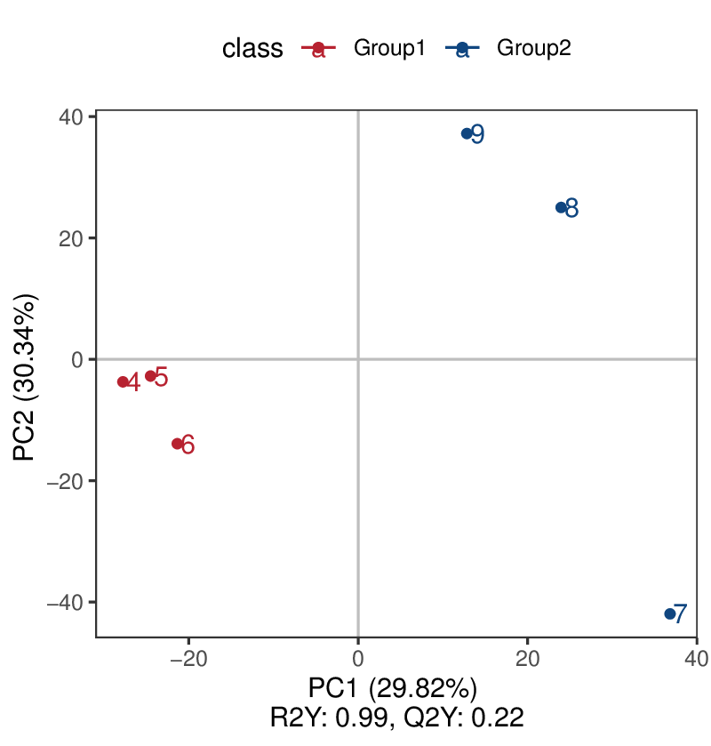
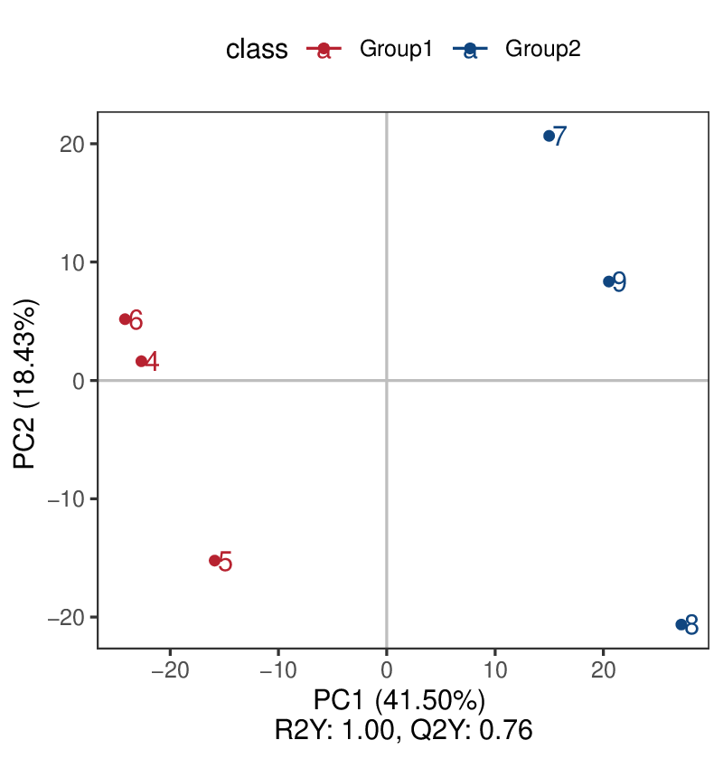
Figure 5.2 PLS-DA score scatterplot and sorting validation chart
Note: scatterplot of scores, abscissa is the score of the sample on the first principal component; The ordinate is the score of the sample on the second principal component; R2Y represents the interpretation rate of the model, Q2Y is used to evaluate the predictive ability of PLS-DA model, and R2Y greater than Q2Y indicates that the model is well established.
Note: sorting validation. The abscissa represents the correlation between Y in the random group and Y in the original group, and the ordinate represents the score of R2 and Q2; A point in the figure represents an validation.
Corresponding result catalog: Result/3.MetDiffScreening/*.vs.*/ *.vs.*_{pos,neg}-PLSDA-{score,valid}.{png,pdf}.
5.3 Differential metabolites screening results
The screening of differential metabolites mainly refers to three parameters: VIP, FC and P value. VIP refers to the variable importance in the projection of the first principal component of the PLS-DA model [10], and the VIP value represents the contribution of the metabolites to the grouping; FC refers to the fold change, which is the ratio of the mean of all biological repeated quantitative values of each metabolite in the comparison group; P-value is calculated by T-test [6], indicating the level of difference significance. Set the threshold as VIP > 1.0, FC > 1.2 or FC < 0.833 and P-value < 0.05 [11-13], and the screened differential metabolites are shown in Table 5.3:
Table 5.3 Differential metabolites screening results
| Compared Samples | Num. of Total Ident. | Num. of Total Sig. | Num. of Sig.Up | Num. of Sig.down | Threshold |
|---|---|---|---|---|---|
| Group1.vs.Group2_pos | 1698 | 101 | 59 | 42 | p-value < 0.05, VIP > 1.0, FC > 1.2 or < 0.833 | Group2.vs.Group3_pos | 1698 | 517 | 348 | 169 | p-value < 0.05, VIP > 1.0, FC > 1.2 or < 0.833 | Group3.vs.Group4_pos | 1698 | 174 | 86 | 88 | p-value < 0.05, VIP > 1.0, FC > 1.2 or < 0.833 | Group1.vs.Group2_neg | 1266 | 44 | 21 | 23 | p-value < 0.05, VIP > 1.0, FC > 1.2 or < 0.833 | Group2.vs.Group3_neg | 1266 | 319 | 219 | 100 | p-value < 0.05, VIP > 1.0, FC > 1.2 or < 0.833 | Group3.vs.Group4_neg | 1266 | 57 | 15 | 42 | p-value < 0.05, VIP > 1.0, FC > 1.2 or < 0.833 |
Note: Only part of the results are shown in the report, and the detailed results can be seen in Result/3.MetDiffScreening/*.vs.*/ *.vs.*_{pos,neg}_Diff_order.xls. (1) Compared Samples, the former vs the latter. (2) Num. of Total Ident.: Total number of identified metabolites. (3) Num. of Total Sig.: Total number of metabolites with significant difference. (4) Num. of Sig. Up: Number of significantly upregulated metabolites. (5) Num. of Sig. down: Number of significantly downregulated metabolites.
5.4 Volcano plot of differential metabolites
The volcano plot can visually display the overall distribution of different metabolites. The abscissa represents the fold change of the difference of the metabolites in different groups (log2 (Fold Change)), and the ordinate represents the level of significance of the difference (-log10 (P-value)). Each point in the volcano plot represents a metabolite, the significantly up-regulated metabolite is represented by a red dot, the significantly down-regulated metabolite is represented by a blue dot, and the size of the dot represents the VIP value. The results are shown in Figure 5.4 (see the result file for the high-definition version of the picture):
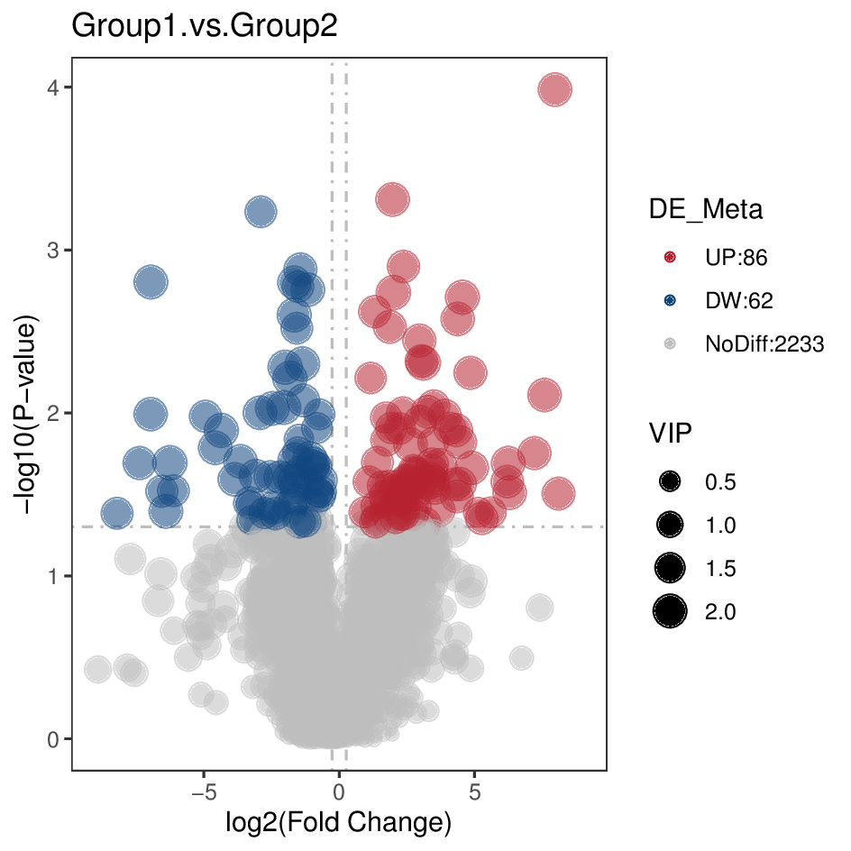
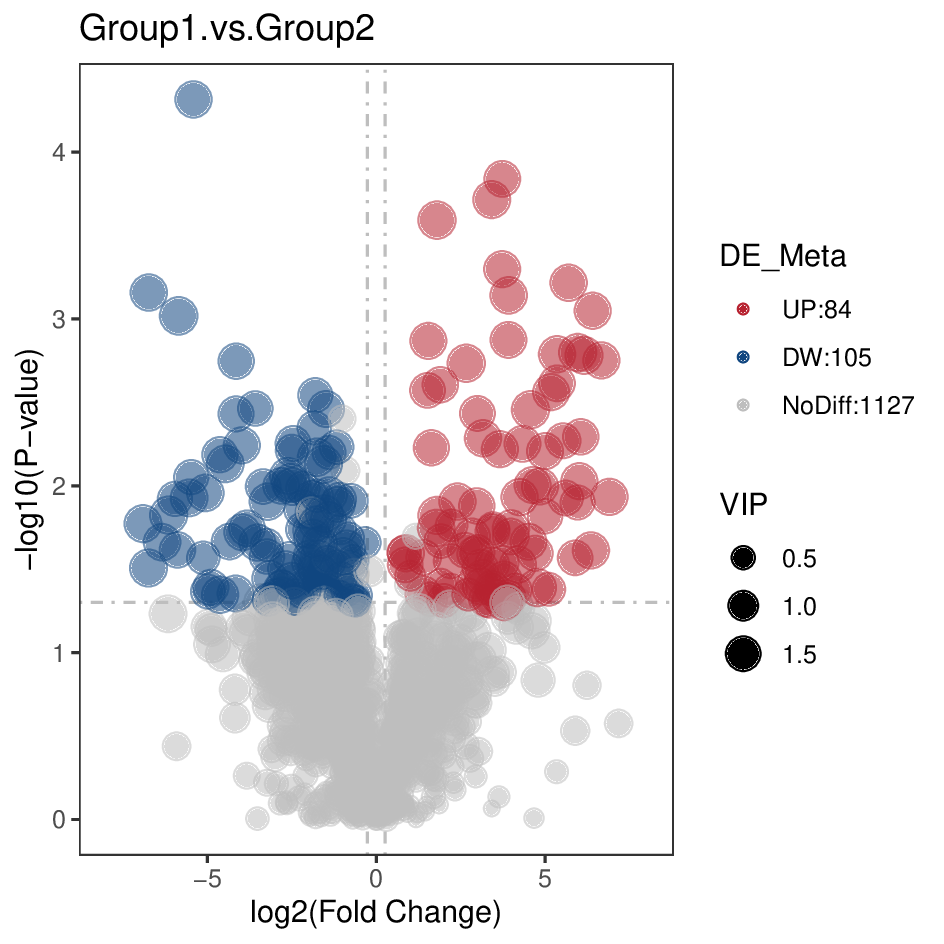
Figure 5.4 Volcano plot of differential metabolites
Corresponding result catalog: Result/3.MetDiffScreening/*.vs.*/ *.vs.*_{pos,neg}.xls.volcano.{png,pdf}
5.5 Matchstick plot of differential metabolites
According to the differential metabolites obtained from each group of difference comparison, draw a matchstick plot, which can clearly show the up and down-regulation of the metabolites and the substances with large difference multiples. We make a logarithmic conversion of the Fold Change value of the differential metabolite based on the bottom of 2, and take the metabolite of the top 20 and the bottom 20 to display the chart. The color of the dot represents the up and down-regulation, the blue represents the down, and the red represents the up; The length of the rod represents the size of log2 (Fold Change); The size of the point represents the size of the VIP value, and the result is shown in Figure 5.5 (see the result file for the high-definition version of the picture):
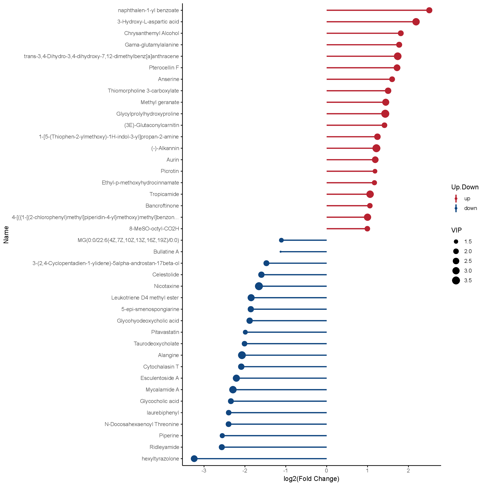
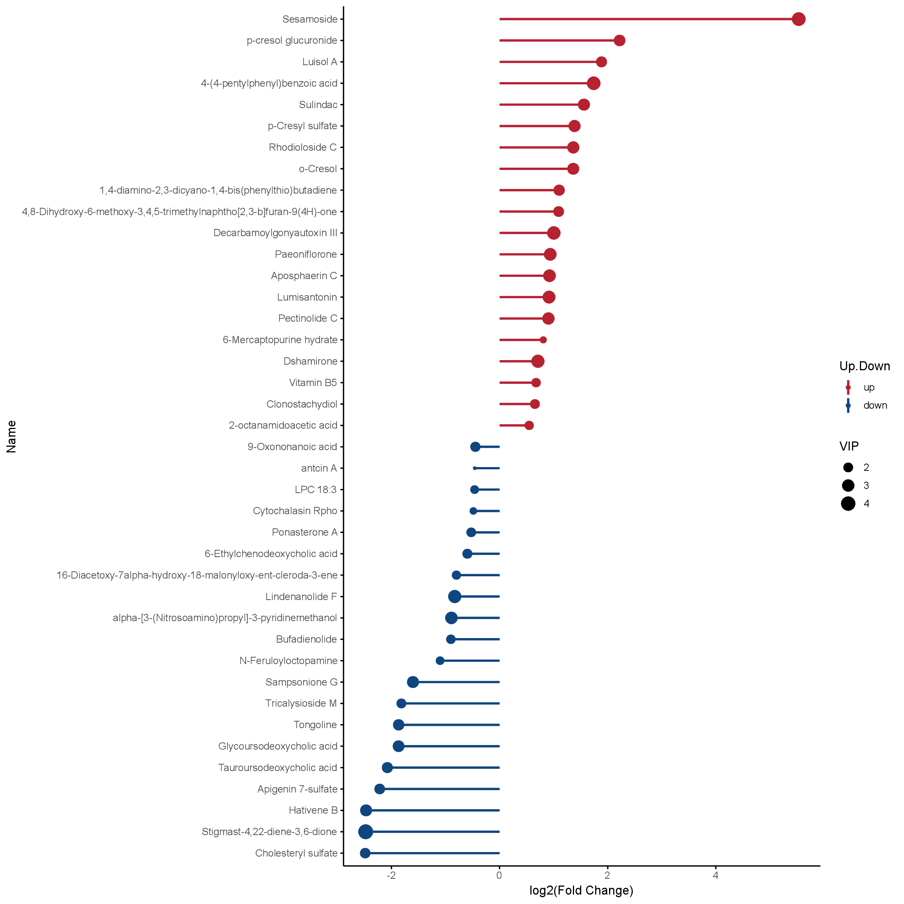
Figure 5.5 Matchstick plot of differential metabolites
Corresponding result catalog: Result/3.MetDiffScreening/*.vs.*/ *.vs.*_{pos,neg}_stem.{png,pdf}.
6. Differential metabolite analysis
6.1 Venn diagram of differential metabolites
Through Venn diagram display of differential metabolites of multiple comparison combinations, we can intuitively compare the overlap and unique difference metabolites between different groups. The results are shown in Figure 6.1 (see the result file for the high-definition version of the picture):
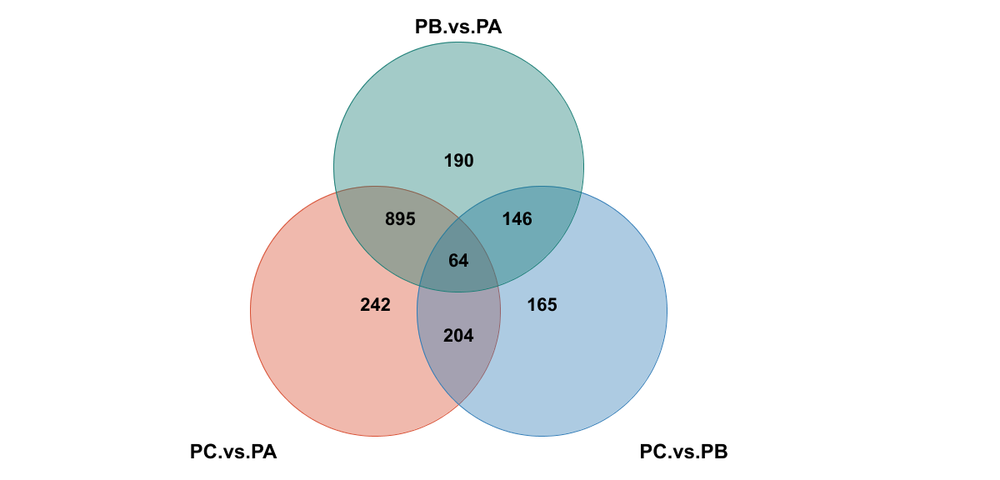
Figure 6.1 Venn diagram of differential metabolites
Corresponding result catalog: Result/4.MetDiffAnalysis/Venn_diff/Diff_Venn_{pos,neg}.{png,svg}.
6.2 Box plot of differential metabolite
The box plot can display the statistics of the central trend and dispersion, and plays an important role in evaluating the symmetry of the data, identifying the abnormal value of the data and comparing the numerical value of the data. The differential metabolites obtained by the comparison of each group can be drawn by the box plot, and the change and difference of the differential metabolites in different experimental groups can be seen. The results are shown in Figure 6.2 (see results file for pictures of each differential metabolite):
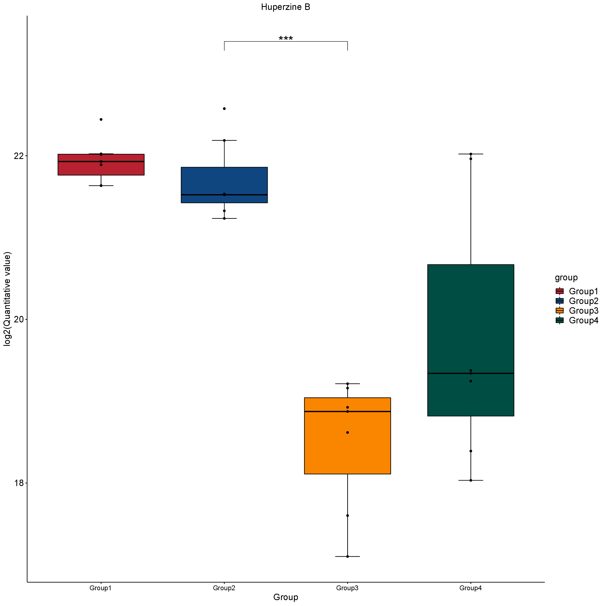
Figure 6.2 Box plot of differential metabolite
Note: Vertical coordinate is quantitative values of metabolites, horizontal coordinate is different subgroups; the * symbol indicates the significance of differences between groups, where * represents P < 0.05, ** represents P < 0.01, and *** represents P < 0.001.
Corresponding result catalog: Result/4.MetDiffAnalysis/Box_diff/{pos,neg}/*_Box_plot.{png,pdf}.
6.3 Violin plot of differential metabolite
The violin plot can show the distribution state of multiple groups of data and the probability density, which is a box line plot inside and a kernel density plot outside, the larger the graph area in the region, the higher the probability of distribution around this value [14-15]. The differential metabolites obtained from the comparison of each group were plotted on a violin plot, which allows us to see the changes and differences of the differential metabolites in the different experimental groups, and the results are shown in Figure 6.3 (Only partial results are shown, the picture of each differential metabolite is shown in the results file):
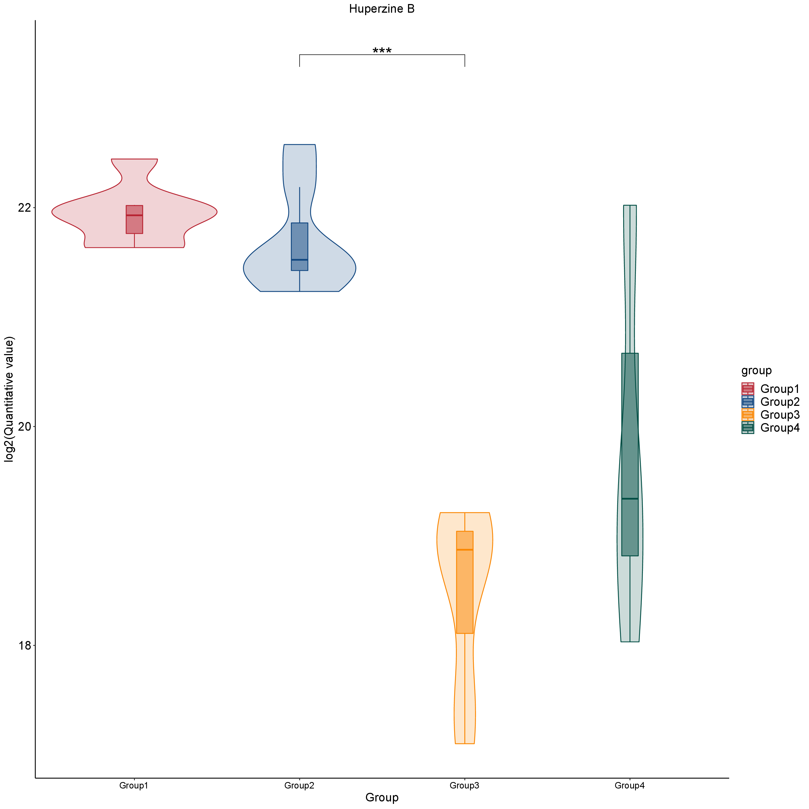
Figure 6.3 Differential metabolite violin plot
Note: Vertical coordinate is quantitative values of metabolites, horizontal coordinate is different subgroups; the * symbol indicates the significance of differences between groups, where * represents P < 0.05, ** represents P < 0.01, and *** represents P < 0.001.
Corresponding results catalog: Result/4.MetDiffAnalysis/Violin_diff/{pos,neg}/*_Violin_plot.{png,pdf}.
6.4 Cluster analysis of differential metabolites
Cluster analysis is used to determine the metabolic pattern of metabolites under different experimental conditions. Metabolites with similar metabolic patterns may have similar functions or participate in the same metabolic process or cell pathway. Therefore, the function of some metabolites can be inferred by grouping metabolites with the same or similar metabolic patterns.
6.4.1 Cluster analysis of total differential metabolites
Carry out hierarchical cluster analysis [16] on all differential metabolites between the obtained comparison pairs, and normalize and cluster the relative quantitative value of differential metabolites. The results are shown in Figure 6.4.1 (see the result file for the high-definition version of the picture):
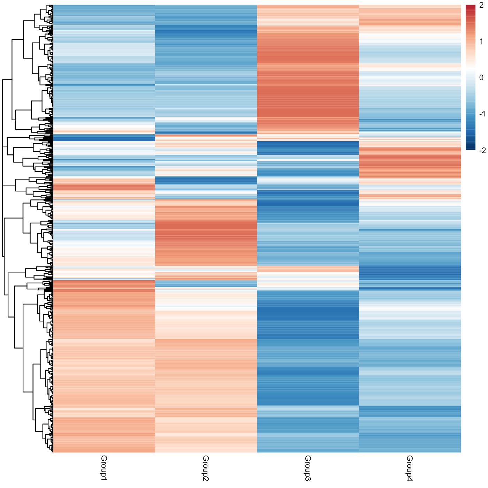
Figure 6.4.1 Clustering heatmap of total differential metabolites
Note: The vertical is the clustering of samples, and the horizontal is the clustering of metabolites. The shorter the cluster branch, the higher the similarity. See the result file for the picture with the name of the metabolite and the original mapping data.
Corresponding result catalog: Result/4.MetDiffAnalysis/Heatmap_diff/Diff_Heatmap_{pos,neg}.{cluster,cluster.detail}.{png,pdf}.
6.4.2 Cluster analysis of differential metabolites in groups
Hierarchical cluster analysis was carried out on the two groups of different metabolites obtained, and the differences of metabolic patterns between and within the two groups were obtained by the same comparison. The results are shown in Figure 6.4.2 (see the result file for the high-definition version of the picture):
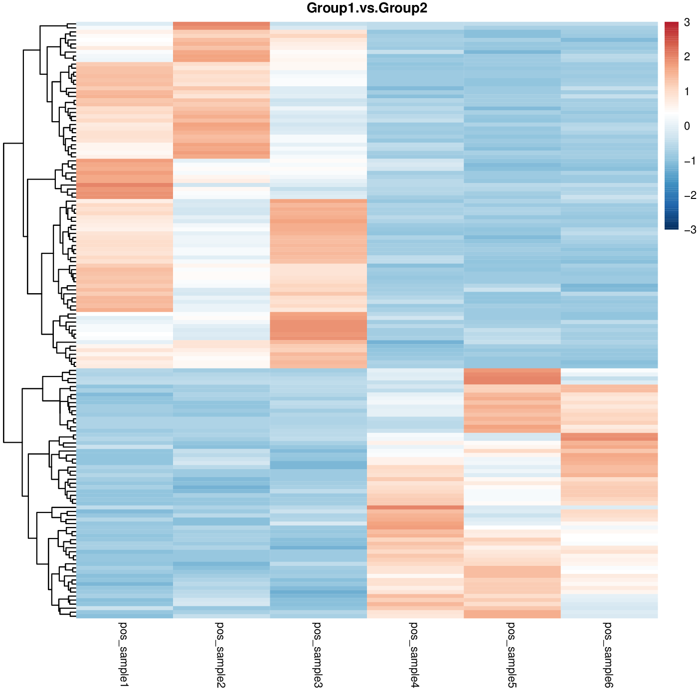
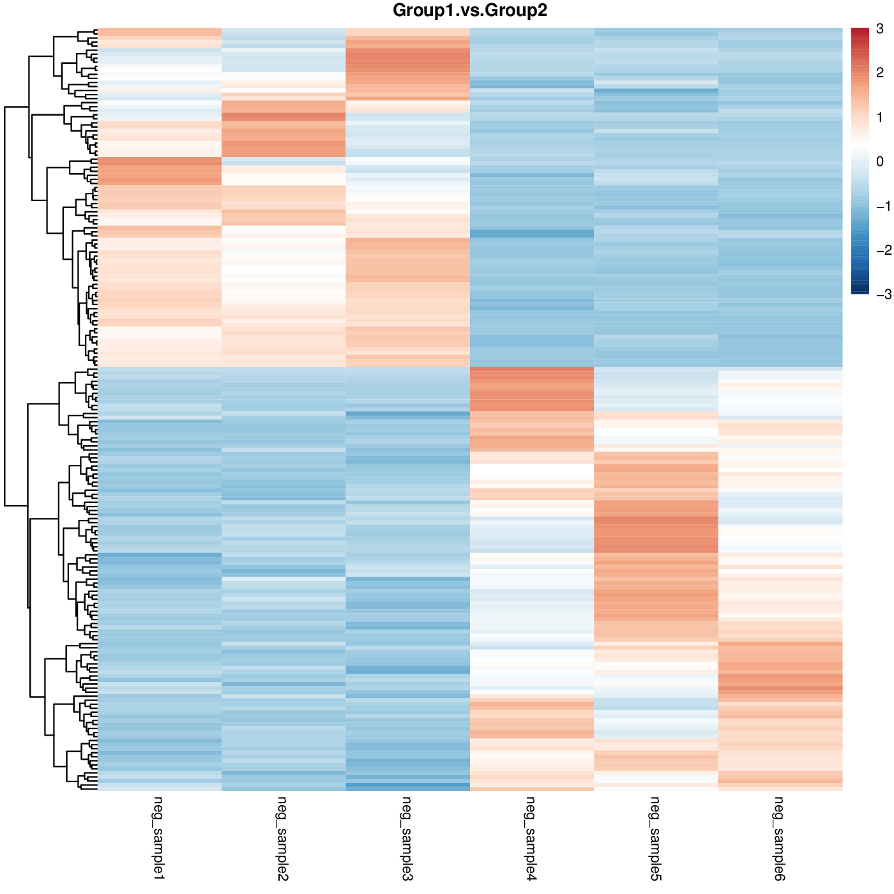
Figure 6.4.2 Clustering heatmap of differential metabolites
Note: The vertical is the clustering of samples, and the horizontal is the clustering of metabolites. The shorter the cluster branch, the higher the similarity.
Corresponding result catalog: Result/4.MetDiffAnalysis/*.vs.*/*.vs.*_{pos,neg}_{heatmap,cluster_heatmap,cluster_heatmap_detail}.{png,pdf}.
6.5 K-Means analysis of differential metabolites
K-Means analysis can demonstrate the trend of relative content of metabolites in different subgroups [17-19]. The relative quantitative values of differential metabolites were corrected by taking log centering and then K-Means cluster analysis was performed. The results are shown in Figure 6.5:
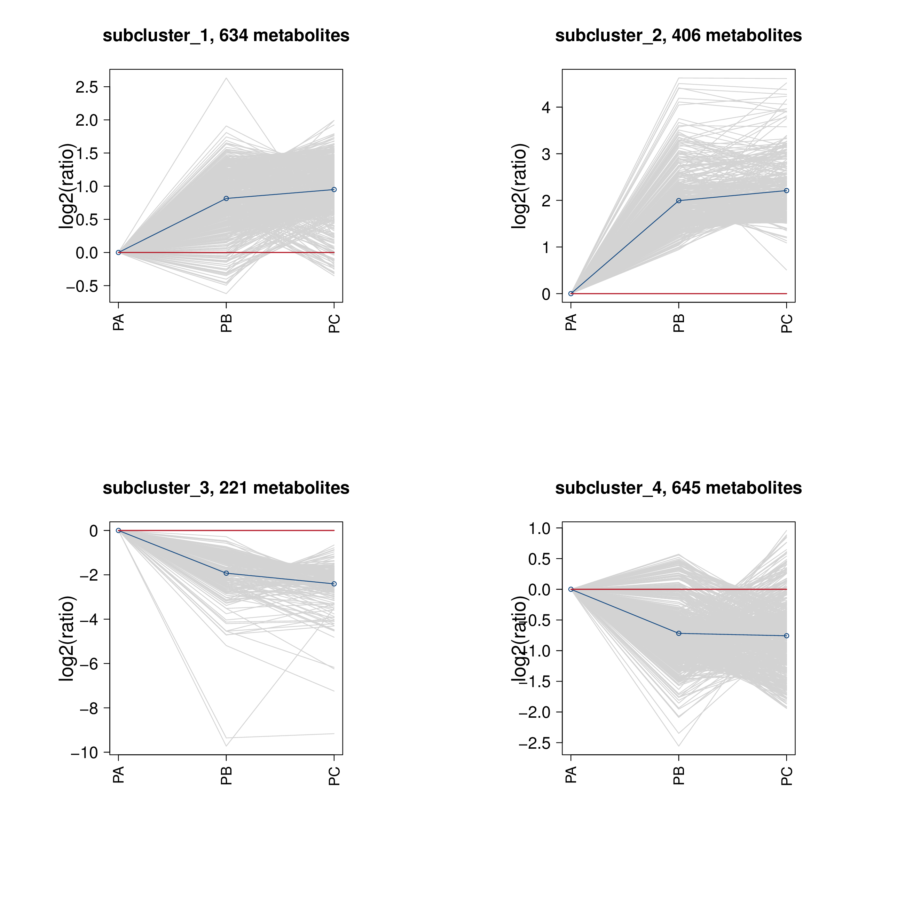
Figure 6.5 K-Means analysis of differential metabolites
Note: Horizontal coordinates indicate the name of the sample group, vertical coordinates are log-centered corrected values of relative metabolite content. Subcluster represents a cluster of metabolites with the same trend. *metabolite (s) represents the number of metabolites in the cluster. Gray lines in each subplot represent the relative corrected values of metabolites in a subcluster under different experimental conditions, and blue lines represent the relative corrected mean values of all metabolites in the subcluster under different experimental conditions. The raw mapping data are shown in the results file.
The corresponding result catalog: Result/4.MetDiffAnalysis/Kmeans_diff/{pos,neg}/Diff_kmeans_{pos,neg}_subcluster/kmeans_subcluster_plots.{png,pdf}.
6.6 Correlation analysis of differential metabolites
There is a synergistic or mutually exclusive relationship between differential metabolites. For example, if the change trend of certain metabolites is the same, it is a positive correlation; Contrary to the change trend of certain metabolites, it is negative correlation. The purpose of differential metabolite correlation analysis is to check the consistency of metabolite and metabolite change trend, and analyze the correlation between all metabolites by calculating Pearson correlation coefficient between all metabolites.
When the linear relationship between the two metabolites is enhanced, it tends to 1 when it is positively correlated, and to -1 when it is negatively correlated. At the same time, a significance statistical test was conducted for the correlation analysis of metabolites [6], and the threshold was set as P-value < 0.05. The results are shown in Figure 6.6 (see the result file for the high-definition version of the picture):


Figure 6.6 Correlation diagram of differential metabolites
Note: The highest correlation is 1, which is a complete positive correlation (red), and the lowest correlation is -1, which is a complete negative correlation (blue). The part without color indicates P-value > 0.05. The figure shows the correlation of the differential metabolites of top 20 sorted by P-value from small to large.
Corresponding result catalog: Result/4.MetDiffAnalysis/*.vs.*/*.vs.*_{pos,neg}_corr.{png,pdf}.
6.7 Chord diagram of differential metabolites
Chord diagram is a visual method to show the correlation between data. Node data is arranged radially along the circumference, and the nodes are connected by chord with width. The chord diagram is drawn based on the correlation coefficient of differential metabolites, which can reflect the correlation and correlation degree between differential metabolites in the sample. In order of P-value from small to large, select the differential metabolites of top 20 for chord diagram display. The color of the point represents differential metabolites, the size of the point represents the size of log2(Fold Change), the thickness of the line between the metabolites represents the correlation between the two metabolites, the blue line represents negative correlation, and the red line represents positive correlation (only the relationship between the two substances with the absolute value of the correlation coefficient greater than 0.7 is shown). The results are shown in Figure 6.7:
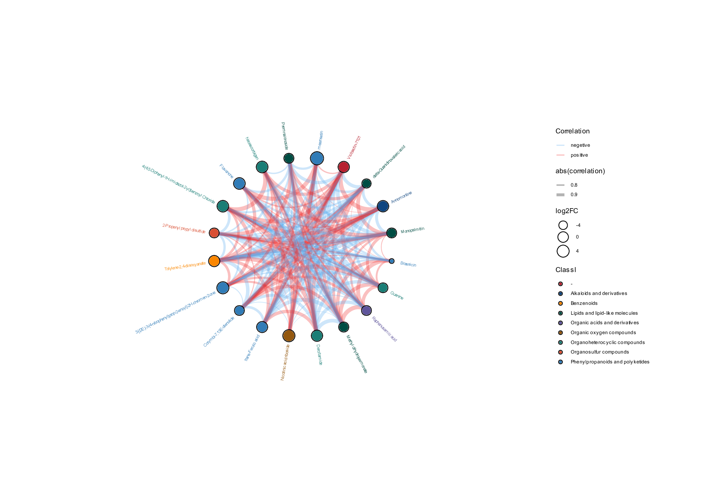
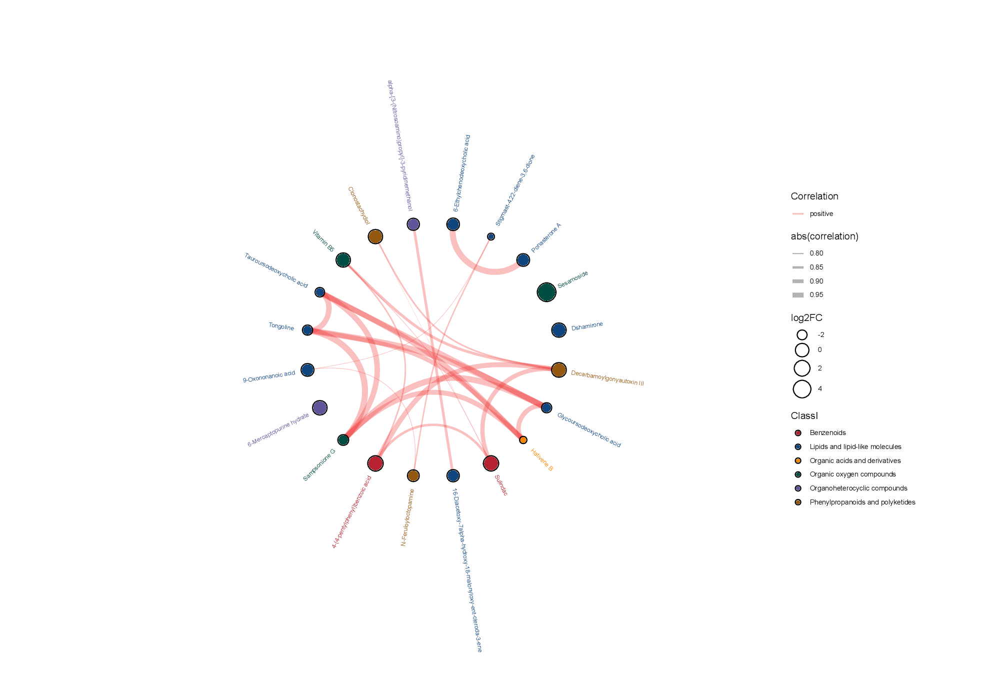
Figure 6.7 Chord diagram of differential metabolites
Corresponding result catalog: Result/4.MetDiffAnalysis/*.vs.*/*.vs.*_{pos,neg}_chord.{png,pdf}.
6.8 Z-score analysis
Z-score (standard score) is a value converted from the relative content of metabolites, which is used to measure the relative content of metabolites on the same level. The calculation of Z-score is based on the mean value and standard deviation of the reference data set (control group). The specific formula is expressed as: z = (x – μ) / σ. Where x is a specific score, μ is the average, σ is the standard deviation. The results are shown in Figure 6.8 (see the result file for the high-definition version of the picture):
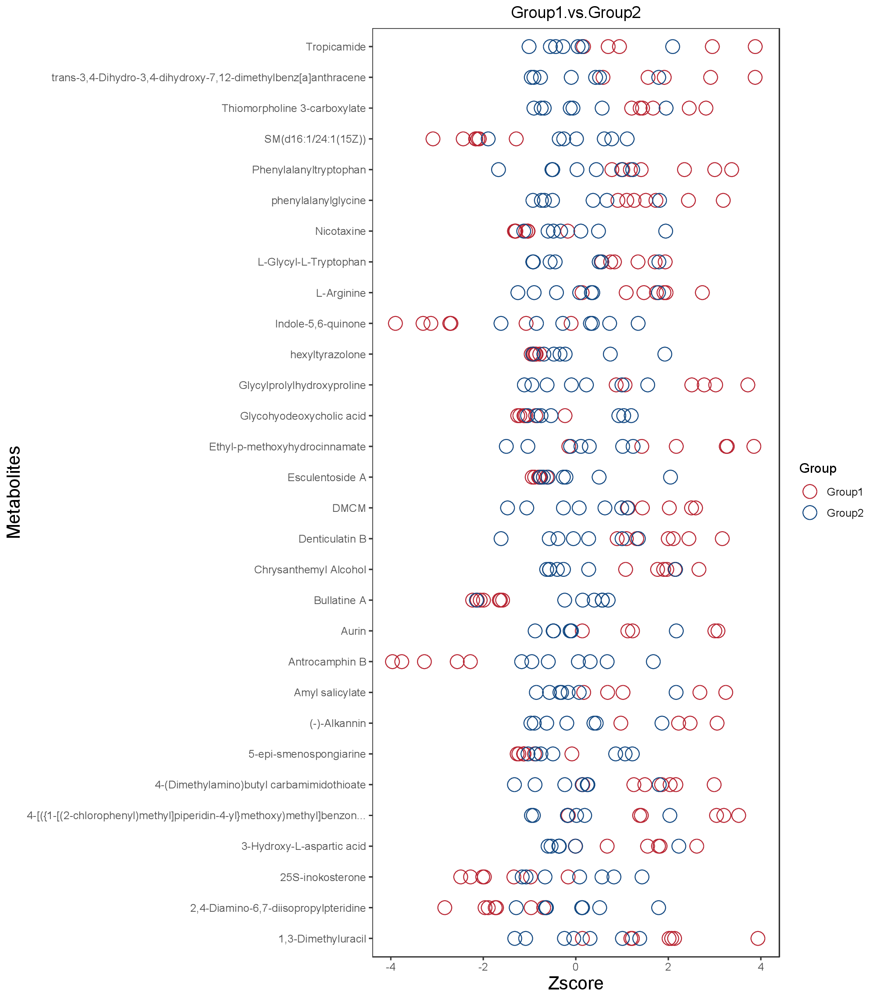
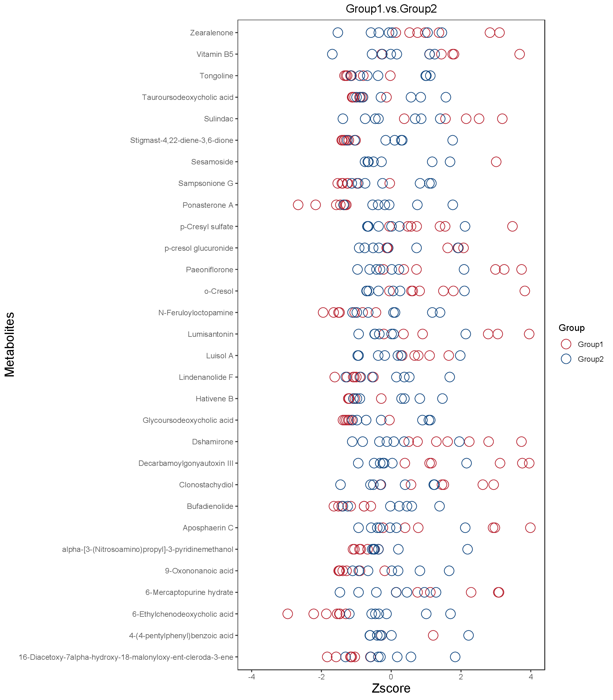
Figure 6.8 Z-score diagram
Note: The abscissa indicates Z-score value and the ordinate indicates differential metabolite. Each circle represents a sample, and only the metabolite of top 30 (sorted by P-value from small to large) is shown in the figure. Among them, samples with Z-score exceeding 4 or -4 cannot be displayed.
Corresponding result catalog:Result/4.MetDiffAnalysis/*.vs.*/*.vs.*_{pos,neg}_zscore.{png,pdf}.
7 KEGG analysis
7.1 KEGG classification analysis
KEGG [20-23] is a powerful tool for metabolic analysis and metabolic network studies in organisms. The KEGG classification chart was plotted based on the differential metabolites from two different groups. The results are shown in Figure 7.1 (see the result file for the high-definition version of the picture):
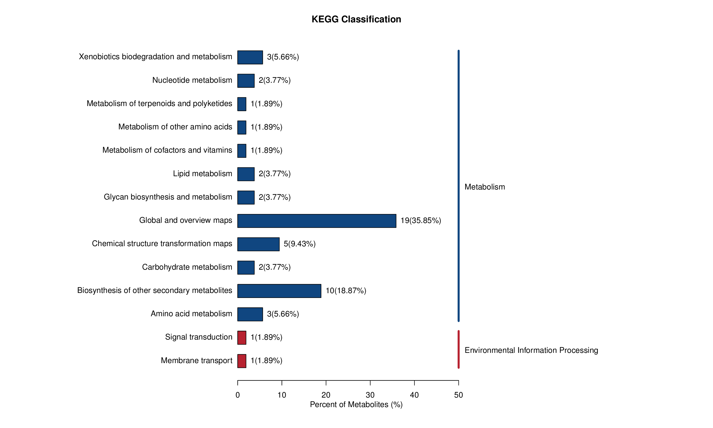
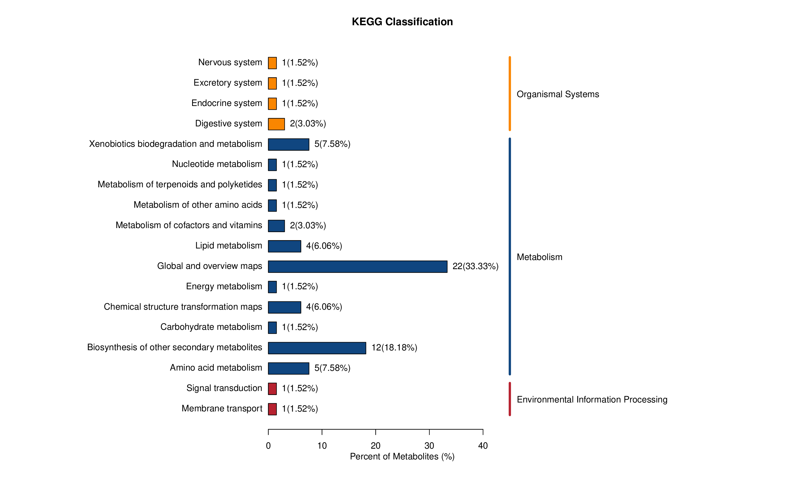
Figure 7.1 Differential metabolite KEGG classification chart
Note: The horizontal coordinates in the graph indicate the number of metabolites annotated under a particular KEGG pathway as a percentage of the number of all annotated metabolites, the vertical coordinates are KEGG pathway primary classifications on the right and KEGG pathway secondary classifications on the left.
Corresponding results catalog: Result/5.MetKeggEnrichment/*.vs.*/*.vs.*_{pos,neg}_KEGG_classification.{png,pdf}.
7.2 KEGG enrichment results
The enrichment results take KEGG pathway as the unit, and based on the principle of hypergeometric distribution test, as shown in the figure below, find out the pathway enriched in differential metabolites compared with all identified metabolites. Pathway enrichment can determine the most important biochemical metabolic pathway and signal transduction pathway that the differential metabolites involved in .
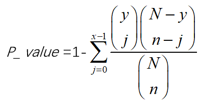
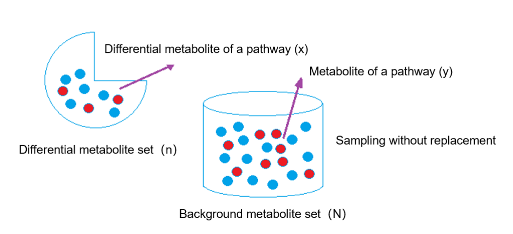
Where N is the number of metabolites participating in the KEGG metabolic pathway among all metabolites, n is the number of differential metabolites in N, y is the number of metabolites annotated to a KEGG pathway, and x is the number of differential metabolites enriched to a KEGG pathway. If the ratio condition x/n > y/N is met, the pathway is a KEGG enrichment pathway. With the help of hypergeometric test method, the P-value value of pathway enrichment is obtained, where P-value ≤ 0.05 is the threshold, and the KEGG pathway meeting this condition is defined as the KEGG pathway significantly enriched in differential metabolites. The main biological functions of differential metabolites can be determined by enrichment analysis of KEGG pathway. The results of KEGG pathway enrichment of differential metabolites are shown in Table 7.2:
Table 7.2 KEGG enrichment results
| MapID | MapTitle | Pvalue | x | y | n | N | EnrichDirect | MetaIDs | kegg_cpd_id |
|---|---|---|---|---|---|---|---|---|---|
| map04927 | Cortisol synthesis and secretion | 0.0510948905109489 | 1 | 1 | 7 | 137 | Over | Cortodoxone | cpd:C05488 | map04934 | Cushing syndrome | 0.0510948905109489 | 1 | 1 | 7 | 137 | Over | Cortodoxone | cpd:C05488 | map05225 | Hepatocellular carcinoma | 0.0510948905109489 | 1 | 1 | 7 | 137 | Over | Aflatoxin B1 | cpd:C06800 |
Note: Only part of the results are shown in the report, and for detailed results please see: Result/5.MetKeggEnrichment/ *.vs.*/ *.vs.*_{pos,neg}.kegg_enrichment.xls. (1) MapID: ID of the enriched KEGG pathway. (2) MapTitle: Enriched KEGG pathway name. (3) Pvalue: P-value of enrichment analysis. (4) X: Number of differential metabolites related to this pathway. (5) Y: Number of background (all) metabolites related to the pathway. (6) n: Number of differential metabolites of kegg annotation. (7) N: Number of background (all) metabolites of kegg annotation. (8) EnrichDirect: Enrichment direction, Over represents enrichment, i.e. x/n > y/N. (9) MetaIDs: List of enriched metabolites. (10) kegg_cpd_Id: ID of KEGG database metabolite.
7.3 KEGG enrichment bubble diagram
According to the above enrichment results, the bubble diagram of the enriched KEGG pathway was drawn (only the results of top 20 are shown). The results are shown in Figure 7.3 (see the result file for the high-definition version of the picture):
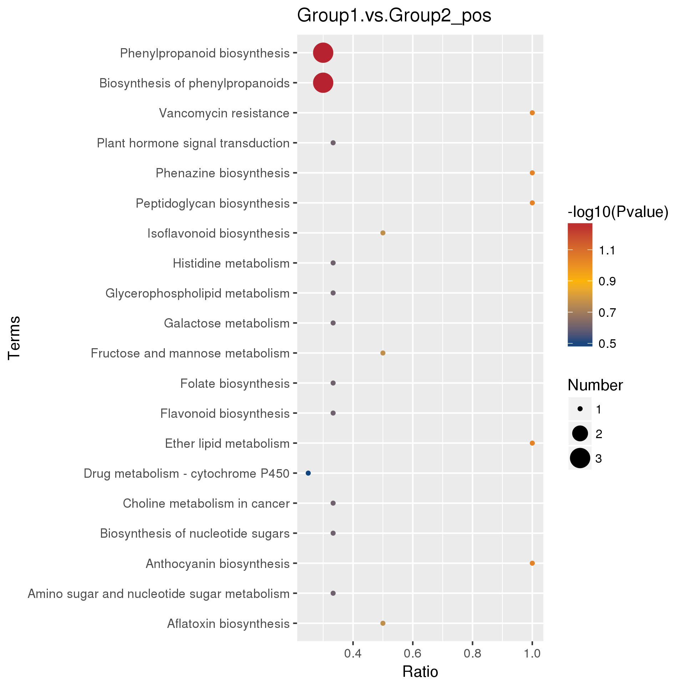
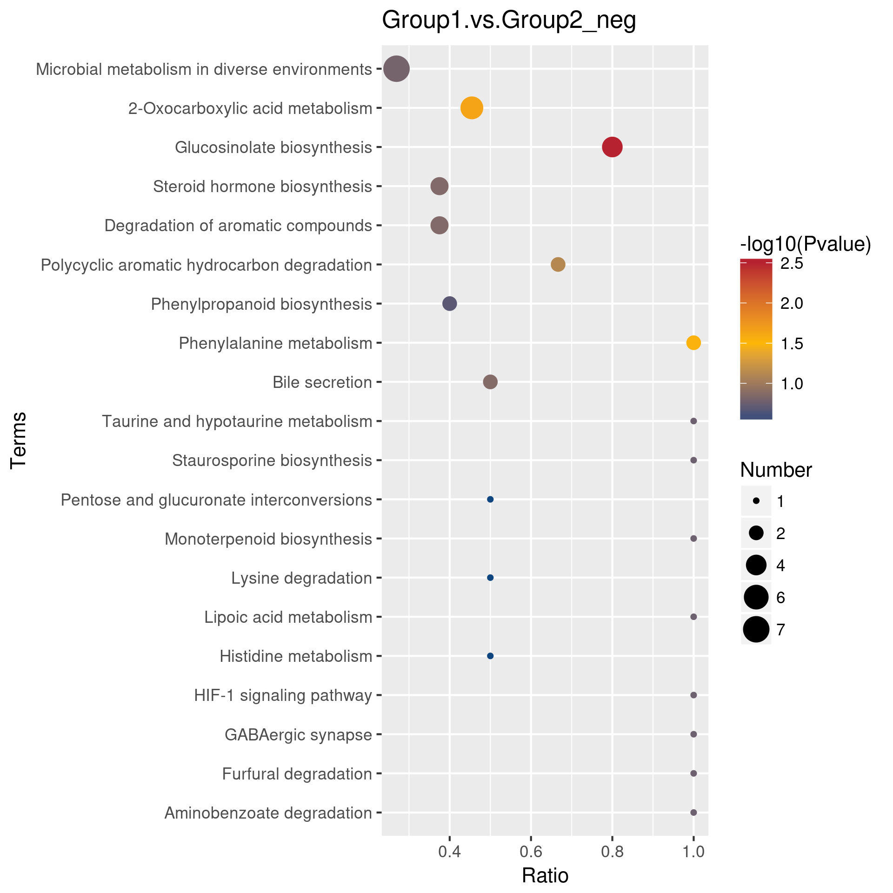
Figure 7.3 KEGG enrichment bubble diagram
Note: The abscissa is x/y (the number of differential metabolites in the corresponding metabolic pathway/the number of total metabolites identified in the pathway). The higher the value, the higher the concentration of differential metabolites in the pathway. The color of the point represents the p-value value of the hypergeometric test. The smaller the value, the greater the reliability and statistical significance of the test. The size of the point represents the number of differential metabolites in the corresponding pathway. The larger the point, the more differential metabolites in the pathway. (If there is no enrichment result, this figure is not available)
Corresponding result catalog: Result/5.MetKeggEnrichment/*.vs.*/*.vs.*_{pos,neg}.KEGG_Enrich.scatterplot.{png,pdf}.
7.4 KEGG enrichment pathway diagram
In the KEGG pathway diagram, the circle represents the metabolite, in which the green solid circle is marked with the annotated metabolite, the red circle is marked with the up-regulated differential metabolite, the blue circle is marked with the down-regulated differential metabolite, and the yellow circle is marked with both up-regulated and down-regulated differential metabolite. The results are shown in Figure 7.4 (see the result file for the high-definition version of the picture). In order to facilitate viewing the items in the KEGG pathway diagram, the KEGG pathway diagram is made into a web version. Please click on the web version of one group of relatively correct pathway diagrams, and see the results file for the results of the remaining groups.
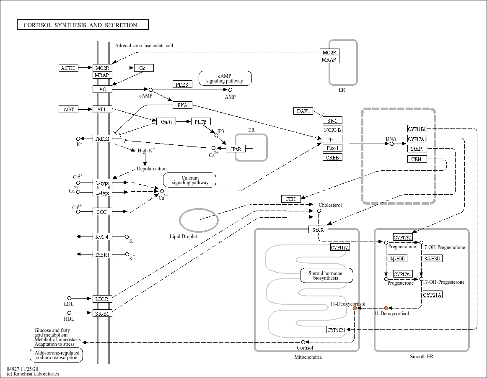
Figure 7.4 KEGG enrichment pathway diagram
Corresponding result catalog: Result/5.MetKeggEnrichment/*.vs.*/*.vs.*_{pos,neg}_KEGG_map; For the link of the web version result file please see:Result/5.MetKeggEnrichment/*.vs.*/*.vs.*_{pos,neg}_KEGG_map/Met_results_dir.html.
7.5 KEGG control network diagram
In the field of biochemistry, metabolic pathway refers to a series of biochemical reactions in the process of transforming metabolic substances in cells into new metabolic substances under the action of enzymes. The metabolic network refers to the network that describes the metabolism and physiological processes in cells, which is composed of metabolic reactions and regulatory mechanisms that regulate these reactions. Based on the differential metabolites obtained from the previous analysis, a network-based enrichment analysis is constructed. By default, the KEGG control network diagram uses the Diffusion algorithm for enrichment. The principle behind it is to use the finite difference formula of the heat conduction equation to spread the heat marker from the metabolites to the rest of the node network. This method enables the metabolites of the input network to have thermal markers, which will spread to all the path nodes in the enrichment network. These nodes include the input metabolites, and also include information such as reactions, enzymes, modules and pathways. Finally, the network connected by nodes can be displayed by drawing, which can reflect the intersection between metabolic pathways and target potential enzymes and metabolites under specific research conditions, and show how the disturbance spreads at the level of the pathway and how the pathways interact with each other, thus enhancing the interpretability of the results [24-28]. The analysis results of regulatory interaction network of different metabolites in each group are shown in Figure 7.5:


Figure 7.5 KEGG control network diagram
Note: The red dot represents a metabolic pathway, the yellow dot represents the information of a substance related regulatory enzyme, the green dot represents the background material of a metabolic pathway, the purple dot represents the information of a class of substance molecular modules, the blue dot represents a chemical interaction of a substance, and the green square represents the different substances obtained by this comparison.
Corresponding result catalog: KEGG control network diagrams are available in Result/5.MetKeggEnrichment/*.vs.*/*.vs.*_{pos,neg}.KEGG_net.{png,pdf}
8 GSEA analysis
Traditional KEGG enrichment methods are based on the hypergeometric test for differentially expressed metabolites, but when the expression of a single metabolite does not change much, the results obtained based on traditional enrichment analysis may be little or even no results. GSEA (Gene Set Enrichment Analysis) [29-30] can effectively compensate for the lack of data mining in traditional enrichment analysis, and more comprehensively explain the regulatory role of a functional unit (pathway, GO term, or others). The basic idea is to use a predefined set of metabolites, rank the metabolites according to the degree of differential expression in two types of samples, and then test whether the predefined set of metabolites is enriched at the top or at the end of the ranked list.
GSEA analysis was performed on KEGG entries based on the changes in quantitative values of metabolites. The enrichment results of one group of comparison pairs are as follows, and the results of the remaining groups are shown in the result file.
Table 8 GSEA analysis results
| KEGG_ID | KEGG_Term | Pvalue | AdjustedPv | Size | ES | NES |
|---|---|---|---|---|---|---|
| MAP01240 | BIOSYNTHESIS OF COFACTORS | 0.22975518 | 0.7771669 | 16 | 0.50563926 | 1.2136225 | MAP01230 | BIOSYNTHESIS OF AMINO ACIDS | 0.23764259 | 0.41730815 | 21 | 0.46888283 | 1.1981475 | MAP02010 | ABC TRANSPORTERS | 0.58762884 | 0.7918336 | 21 | 0.37001255 | 0.9152104 | MAP01100 | METABOLIC PATHWAYS | 0.81620556 | 0.7097582 | 134 | 0.24147408 | 0.8431771 | MAP00564 | GLYCEROPHOSPHOLIPID METABOLISM | 0.22336066 | 0.6335994 | 19 | -0.49170488 | -1.2020056 |
Note: Only partial results are shown in the table. Detailed results can be found in Result/6.MetGSEA/*.vs.*/{pos,neg}/*.vs.*_{pos,neg}_KEGG_gsea_result.xls. (1) KEGG_ID: KEGG MAP number. (2) KEGG_Term: Description of KEGG MAP function. (3) Pvalue: P-value of enrichment analysis. (4) AdjustedPv: Corrected P-value. (5) size: The number of metabolites annotated to this entry. (6) ES: GSEA analysis enrichment score of this entry. (7) NES: The enrichment score of this entry after correction by GSEA analysis
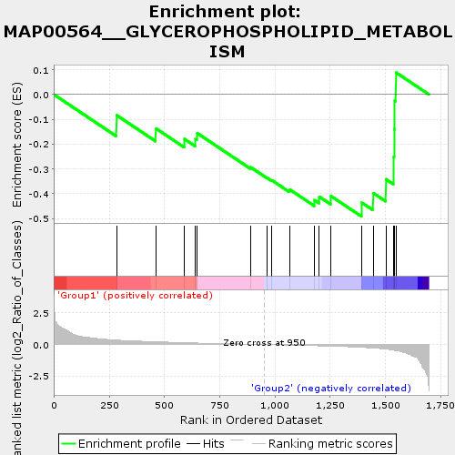
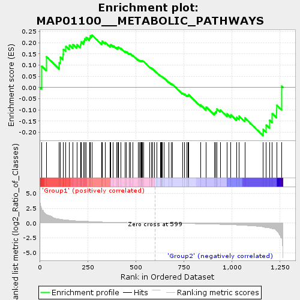
Figure 8.1 GSEA enrichment plot
Note: The GESA enrichment plot consists of three parts, the upper part is the Enrichment score (ES) line graph, which shows the score of ES during the scoring process (running ES), the peaks in the line graph represent the ES value of the functional set of the metabolite, the larger the absolute value of the ES indicates the higher the degree of enrichment, and the positive value of the ES indicates that the functional set of metabolites is enriched in the up-regulated metabolites, negative values of ES indicate that the functional set metabolites are enriched in down-regulated metabolites. Functional sets with peaks at the beginning or end are more noteworthy. The middle part shows the position of the members of the functional set in the list of the expression set, the black vertical lines indicate the members of the functional set, and the colorful bands consist of the members of the expression set in a certain order. The red color represents the up-regulation, and the blue color represents the down-regulation; the lower part shows the log2FC values of the members of the expression set.
Corresponding result catalog: Result/6.MetGSEA/*.vs.*/{pos,neg}/enplot_MAP*.png.
9 ROC curve Analysis of differential metabolite
ROC curve (Receiver operating characteristic) [31], also known as the subject working characteristic curve or sensitivity curve, is a curve drawn according to a series of different dichotomous methods (boundary value or determination threshold), with the true positive rate (sensitivity) as the ordinate and the false positive rate (1-specificity) as the abscissa. The obtained differential metabolites were used to evaluate the potential biomarkers by ROC curve.
The area under the ROC curve is called Area Under Curve (AUC). AUC is used to evaluate the sensitivity and specificity of biomarkers to predict the occurrence of events. The sensitivity and specificity of each metabolite is determined by the optimal threshold of the ROC curve. When AUC value = 0.5, this biomarker has no effect on predicting the occurrence of events and has no predictive value. When the AUC value is greater than 0.5, the closer the AUC value is to 1, the higher the prediction accuracy is. Generally speaking, the prediction accuracy is low when the AUC value is between 0.5 and 0.7, there is a certain prediction accuracy when the AUC value is between 0.7 and 0.9, and there is a high prediction accuracy when the AUC value is above 0.9. The results are shown in Figure 9.1 (see the result file for the high-definition version of the picture):
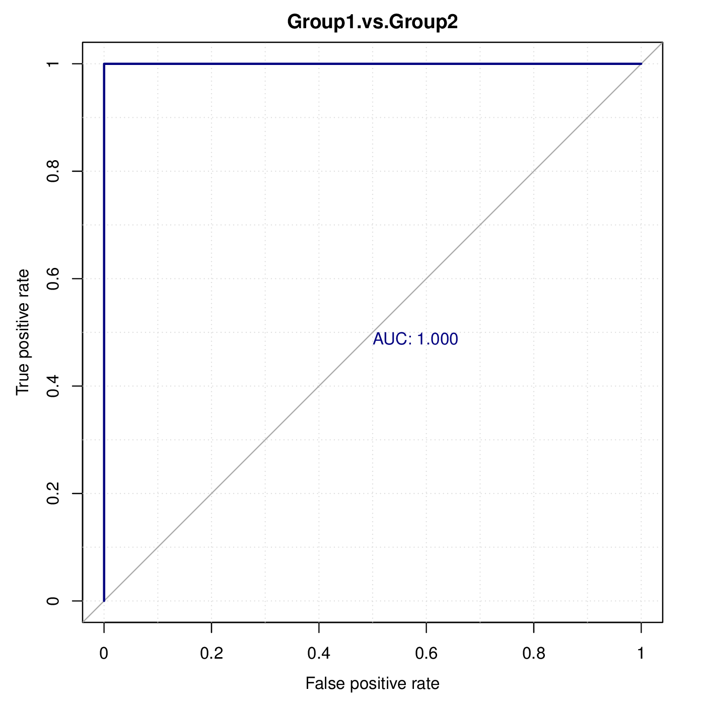
Figure 9.1 ROC curve analysis of differential metabolite
Corresponding result catalog: Result/4.MetDiffAnalysis/*.vs.*/ROC_{pos,neg}.
Appendix
We recommended to use Excel or EditPlus or other professional text editor to open the result file.
1. Untargeted metabolomics experimental process
Untargeted metabolomics experimental process (English): PDF
2. The report includes explanations of relevant terms
The report includes explanations of relevant terms: PDF
Reference
[1] Dunn, W.B. et al. Procedures for large-scale metabolic profiling of serum and plasma using gas chromatography and liquid chromatography coupled to mass spectrometry. Nature protocols. 6,1060-1083 (2011).[2] Want, E.J. et al. Global metabolic profiling procedures for urine using UPLC-MS. Nature protocols. 5,1005-1018 (2010).
[3] Chambers, Matthew C et al. “A cross-platform toolkit for mass spectrometry and proteomics.” Nature biotechnology. 30,918-920 (2012).
[4] Smith, Colin A et al. “XCMS: processing mass spectrometry data for metabolite profiling using nonlinear peak alignment, matching, and identification.” Analytical chemistry. 78,779-787 (2006).
[5] Dai, W. et al. Characterization of white tea metabolome: Comparison against green and black tea by a nontargeted metabolomics approach. Food Research International. 96,40-45 (2017).
[6] Rao, G., Sui, J. & Zhang, J. Metabolomics reveals significant variations in metabolites and correlations regarding the maturation of walnuts (Juglans regia L.). Biology open. (2016).
[7] Wen, B., Mei, Z., Zeng, C., & Liu, S. metaX: a flexible and comprehensive software for processing metabolomics data. BioMed Central Bioinformatics. 18,183 (2017).
[8] Boulesteix, A.L. & Strimmer, K. Partial least squares: a versatile tool for the analysis of high-dimensional genomic data. Briefings in bioinformatics. 8,32-44 (2007).
[9] Wang, J.B. et al. Metabolomic profiling of autoimmune hepatitis: the diagnostic utility of nuclear magnetic resonance spectroscopy. Journal of proteome research. 13,3792-3801 (2014).
[10] Kieffer, D.A. et al. Resistant starch alters gut microbiome and metabolomics profiles concurrent with amelioration of chronic kidney disease in rats. American Journal of Physiology-Renal Physiology. (2016).
[11] Heischmann, S. et al. Exploratory Metabolomics Profiling in the Kainic Acid Rat Model Reveals Depletion of 25-Hydroxyvitamin D3 during Epileptogenesis. Scientific Reports. 6 (2016).
[12] Haspel, J.A. et al. Circadian rhythm reprogramming during lung inflammation. Nature communications. 5 (2014).
[13] Sreekumar, A. et al. Metabolomic profiles delineate potential role for sarcosine in prostate cancer progression. Nature. 457,910-914 (2009).
[14] Maqdasy S, Lecoutre S, Renzi G, et al. Impaired phosphocreatine metabolism in white adipocytes promotes inflammation.Nature Metabolism. 4,190-202 (2022).
[15] Nie M, Yao K, Zhu X, et al. Evolutionary metabolic landscape from preneoplasia to invasive lung adenocarcinoma.Nature communications. 12,6479 (2021).
[16] Chen, X., Xie, C., Sun, L., Ding, J. & Cai, H. Longitudinal Metabolomics Profiling of Parkinson’s Disease-Related α- Synuclein A53T Transgenic Mice. PloS one. 10 (2015).
[17] McLachlan GJ, Bean RW, Ng SK. Clustering.Clustering.Methods in molecular biology. 1526,345-362 (2017).
[18] Ahlqvist E, Storm P, Käräjämäki A, et al. Novel subgroups of adult-onset diabetes and their association with outcomes: a data-driven cluster analysis of six variables.The lancet. Diabetes & endocrinology. 6,361-369 (2018).
[19] Haldar P, Pavord ID, Shaw DE, et al. Cluster analysis and clinical asthma phenotypes.American journal of respiratory and critical care medicine. 178,218-224 (2008).
[20] Kanehisa, M. & Goto, S. KEGG: kyoto encyclopedia of genes and genomes. Nucleic acids research. 28,27-30 (2000).
[21] Rao, J. et al. Metabolic map of mature maize kernels. Metabolomics. 10,775-787 (2014).
[22] Lin, H. et al. Seed metabolomic study reveals significant metabolite variations and correlations among different soybean cultivars. Journal of integrative plant biology. 56,826-836 (2014).
[23] Jia, S. et al. Mineral and metabolic profiles in tea leaves and flowers during flower development. Plant Physiology and Biochemistry. 106,316-326 (2016).
[24] Picart-Armada S, Fernández-Albert F, Vinaixa M, et al. FELLA: an R package to enrich metabolomics data[J]. BioMed Central Bioinformatics. 19,538 (2018).
[25] Keram A, Pei N, et al. Untargeted GC/TOFMS unravel metabolic profiles in cerebrospinal fluid of Chinese people living with HIV. Journal of clinical laboratory analysis. 3 (2021).
[26] Deng Y, Wang J, et al. Metabolomics Mechanism and Lignin Response to Laxogenin C, a Natural Regulator of Plants Growth. International journal of molecular sciences. 2990 (2022).
[27] Mielko KA, Jabłoński SJ, et al. Metabolomics Comparison of Drug-Resistant and Drug-Susceptible Pseudomonas aeruginosa Strain (Intra- and Extracellular Analysis). International journal of molecular sciences. 10820 (2021).
[28] Zou W, Huang H, et al. Preparation, Antibacterial Potential, and Antibacterial Components of Fermented Compound Chinese Medicine Feed Additives. Frontiers in veterinary science. 808846 (2022).
[29] Subramanian A, Tamayo P, Mootha V K, et al. Gene set enrichment analysis: a knowledge-based approach for interpreting genome-wide expression profiles[J]. Proceedings of the National Academy of Sciences of the United States of America. 2005.
[30] Benson Mark D,Eisman Aaron S,Tahir Usman A et al. Protein-metabolite association studies identify novel proteomic determinants of metabolite levels in human plasma.[J] .Cell Metabolism. 35,1646-1660.e3. (2023).
[31] Zhang, J. et al. Metabolomic analysis reveals a unique urinary pattern in normozoospermic infertile men. Journal of proteome research. 13,3088-3099 (2014).